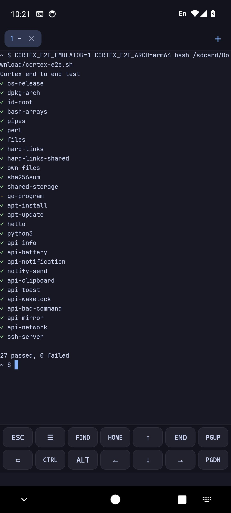
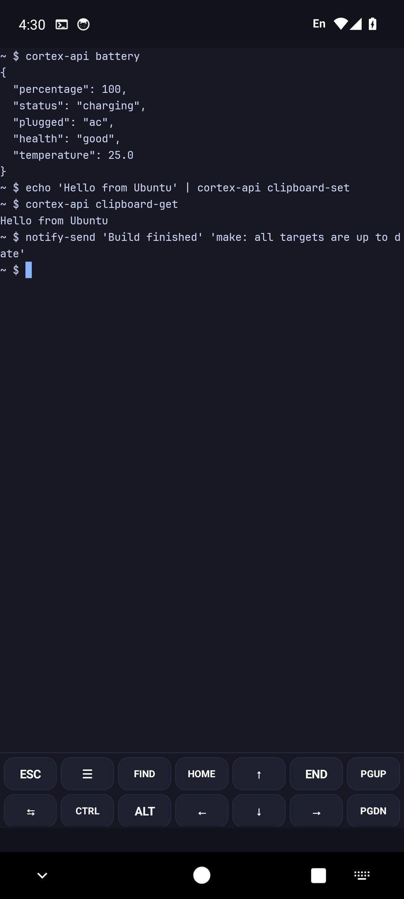
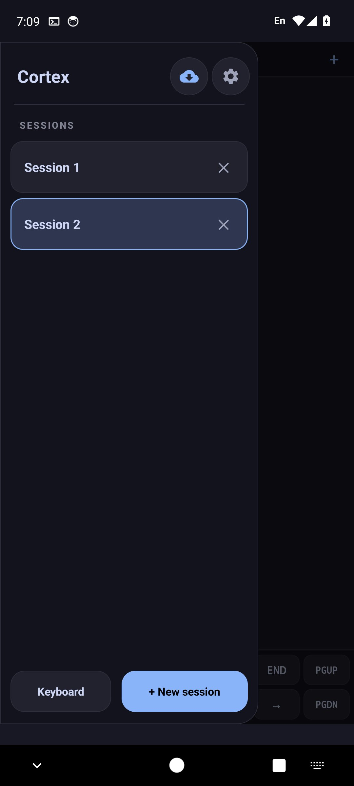
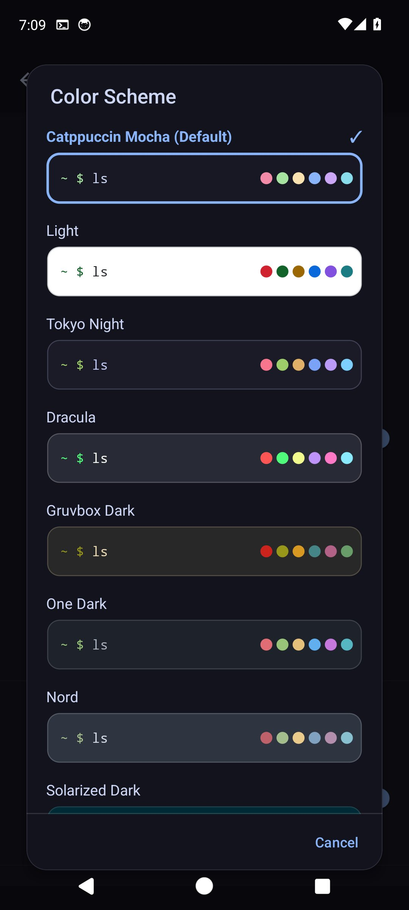
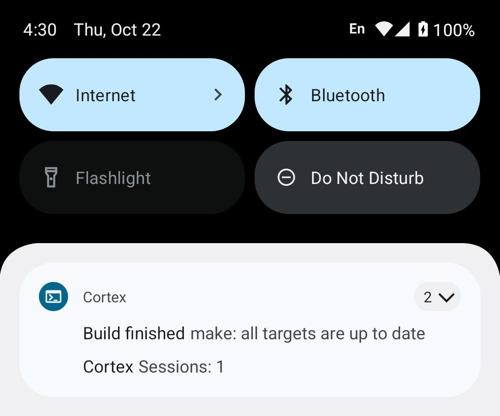

How it works
One thin library inside each program. Nothing in between.
It is the same family as fakechroot and fakeroot, written for what Android does differently. That is the honest name for it, and it is why it is fast.
A function wrapper, not a trap
libcortex-hook.sodefinesopen,stat,execveand about 200 other libc functions. A call goes through it like through any shared library. There is noptraceand no second process.Every program starts through Ubuntu's loader
Android has no
/lib/ld-linux-aarch64.so.1, soexecvestarts Ubuntu'sld.sofrom the app's storage, with the library preloaded.Android's limits, one by one
The seccomp filter, hard links, System V shared memory, memfd locks, other users, ports below 1024: each has its own code in the library.
Static programs are patched, not traced
A program that makes its own system calls never passes through libc. Static C programs get their forbidden calls patched once, Go 1.19+ programs get a small piece of path-mapping code.
| Cortex | fakechroot + fakeroot | PRoot (proot-distro) | Linux Terminal (VM) | |
|---|---|---|---|---|
| Technique | LD_PRELOAD library | LD_PRELOAD library | ptrace tracer | Virtual machine |
| System calls | Straight to the kernel | Straight to the kernel | Stopped by the tracer when they take a path | To a guest kernel |
| Static programs | Patched before their first start | Not covered | Covered | Covered |
| Android's seccomp, hard links, SysV shm | Handled | Not handled | Partly | Not an issue |
| Root needed | No | No | No | No, supported phones only |
Cortex contains no fakechroot or PRoot code. Don't take the speed for granted: compare.sh runs the same tests in Cortex and in proot-distro on your phone.
Real vs emulated
What is real, and what the library pretends.
"Native" here means the binaries are Ubuntu's, they run on the phone's CPU, and the kernel executes their system calls. It does not mean Android turned into Ubuntu.
| CPU | Programs run on it directly, no translation | Real |
| Kernel | Android's Linux kernel: processes, threads, signals, pipes, sockets, mmap, futex | Real |
| Programs and packages | The binaries from Ubuntu's archive, installed by apt and dpkg with Ubuntu's signatures | Real |
| Network | Sockets and DNS, IPv4 and IPv6 | Real |
| glibc | Ubuntu's 2.39 build with three system call sites patched for Android's filter | Adapted |
| Static programs | Patched once in their file before their first start | Adapted |
| Paths | / is the app's private directory, mapped in the libc calls | Emulated |
| Root and other users | Programs see root, and su, runuser and servers that drop privileges become that user. The kernel sees one user, the app's | Emulated |
| Forbidden calls | setuid and the other calls Android's seccomp filter refuses are answered by a signal handler | Emulated |
| Hard links, SysV shm | Copies with a real link count, shared memory in files of Cortex's own | Emulated |
Works without root
- apt, compilers, Python, Node.js, Go, Rust, Java
- PostgreSQL, MariaDB, Redis, nginx, sshd
- su, sudo, runuser and other users
- Servers on ports below 1024, moved 8000 up (80 is 8080)
- An X11 desktop with sound
Needs root mode, or does not work
- systemd as the init system
mount, kernel modules, containers (root mode has them)- Reading the kernel's network tables (
ss,netstat) - The GPU
Speed
The library costs nanoseconds, only where a path is involved.
Code that doesn't call the kernel runs exactly as fast as it would anywhere. Measured on one 8-core phone (Linux 4.14, one big core, median of 9 runs). Run the same on yours:
$ curl -fsSL https://raw.githubusercontent.com/ssfuisu/cortex/main/tests/bench/compare.sh | bash
What you get
A real Ubuntu, and a terminal built for a phone.
Everything below is in the app today.
Ubuntu
- apt, the real oneUbuntu's archive and signatures, the fastest mirror picked once.
- Everything you build withbuild-essential, Python, Node.js, Go, Rust, Java, static linking.
- Users and serverssu and runuser work, PostgreSQL runs its own cluster.
- Backups
cortex-backupsaves your home and the package list.
Terminal
- Sessions that come backTabs you can name, restored after Android ends the app.
- Keys your wayExtra keys in
~/.cortex/keys, pinch to zoom, hardware keyboards. - Modern protocol supportTrue color, OSC 52 clipboard, OSC 133, bracketed paste.
- 14 color schemesAnd CJK and emoji widths done right.
Android
- cortex-apiNotifications, clipboard, sharing, battery, vibration, speech.
- Your files
/sdcardin the shell, your home in Android's Files app. - Local serversA notification opens
npm run devin the browser. - no-fakerootA shell as an ordinary user, for tools that refuse root.
Desktop and remote
- X11 desktopOpenbox or XFCE and Firefox, inside the app, with sound.
- cortex-sshdOpenSSH on port 8022, from your computer.
- Root modeOn rooted phones: a real chroot with cgroups for Podman.
- 50 languagesThe app follows your system language.





Tested every night
Common packages, installed and used on an emulator.
Each one gets a short test of what it is for: a script, a compile, a server answering. Failures are published too.
Install
Running in a few minutes.
- Download the APK
Cortex-arm64-v8a-signed.apkfrom the latest release, orarmeabi-v7afor 32-bit phones. - Install and open it
Ubuntu's base system is unpacked once. Allow storage access if you want
/sdcard. - Use apt
The first install fetches the package lists itself.
$ apt install build-essential git python3 nodejs $ cd /sdcard/Download # the phone's shared storage $ cortex-desktop install xfce # optional desktop
# built by GitHub Actions from the tagged source $ gh attestation verify Cortex-arm64-v8a-signed.apk --repo ssfuisu/cortex $ sha256sum -c SHA256SUMS.txt --ignore-missing
Questions
Asked often, answered plainly.
Is this just PRoot or fakechroot?
Not PRoot: nothing traces the programs. Close to fakechroot: an LD_PRELOAD library maps /usr and /etc into the app's storage and pretends to be root, which is fakechroot's and fakeroot's technique. Cortex doesn't contain their code. It was written for what Android adds: the seccomp filter, no hard links, no SysV shared memory, no exec from app storage on new target levels, and static programs.
Can it break my phone?
No. Everything runs as the app's own Android user, inside the app sandbox, so it cannot touch Android, the system or other apps' private data. If you allow storage access, programs can change your files in /sdcard like a file manager could. Root mode is different: a root shell is a root shell. See SECURITY.md.
How do I know the APK is the code on GitHub?
Releases are built and signed by GitHub Actions from the tagged source, and each APK has a build attestation: gh attestation verify shows the workflow and commit it came from. Checksums and the signing key are in signing/README.md.
A tool refuses to run as root. What now?
Run cortex-api no-fakeroot: a shell where programs see an ordinary user instead of root, until you exit. sudo still works in it. Handy for Claude Code's --dangerously-skip-permissions and similar tools.
Can I run Docker or Podman?
Only in root mode on a rooted phone. Containers need namespaces, mounts and cgroups, which Android never gives an app. This guide has the steps.
Why does Go need special code?
Go programs don't use the C library, they make their system calls themselves, so a preloaded library never sees them. Cortex adds a small piece of code to Go 1.19+ programs before their first start that does the same path mapping.
Is there a desktop or GUI?
Yes, as an add-on. The menu's Desktop button installs Openbox or XFCE, and Firefox if you want, and shows it inside the app with touch or touchpad control, a shared clipboard and sound. It is X11 drawn by the CPU, so it suits editors and browsing more than games.
Which phones are supported?
Android 7.0 and newer, with APKs for 64-bit (arm64-v8a) and 32-bit (armeabi-v7a) ARM. Like Termux, the app targets API level 28, the last one that lets an app run programs from its own storage.
Where do I report problems?
Settings › Send a bug report writes a file with the versions and logs. Attach it to a GitHub issue or send it on Telegram.
Ubuntu in your pocket.
Free and open source. Download the APK, run apt, get to work.